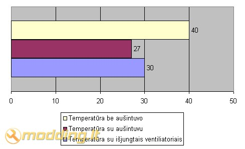

Gembird HDD Cooler HD-A5
Šiais laikais jau tapo įprasta, kad kietieji diskai labai kaista. O turbūt daugelis mėgsta savo HW ir noretų kad jis gyventų kuo ilgiau, tam reikėtų sumažinti komponento temperatūrą.
Šioje apžvalgoje Jūs nepamatysite jokios egzotikos. Pristatau Jums Gembird HD-A5 kietojo disko aušintuvą.
Žvilgsnis iš arčiau
Šis aušintuvas niekuo nesiskiria nuo panašios klasės gaminių. Prieš pirkdamas, turėjau pasirinkimą: Titan ar Gembird. Skyrėsi tik priekinio skydelio spalva, todėl pasirinkau labiau prie mano keiso derantį bei pigesnį Gembird.
Aušintuvas buvo įpakuotas paprastoje plastmasinėje dėžutėje, ji man padėjo jį išlaikyti sausą, nes lauke labai snigo. Nenorėdamas nukrypti nuo temos pateikiu nuotraukas:
Viduje irgi nieko galinčio nustebinti: maišelis su varžtais (kaip isitikinau, jų ten gerokai daugiau, nei reikia) ir didelis radiatorius su aušintuvais, kurio galimybės mane labiausiai domina.
Ant radiatoriaus buvo daug ką žadantis užrašas, - "Ultimate Hard Drive Cooler", kuris kaip veliau paaiškėjo, buvo 100% ir nė trupučio mažiau teisus.
Pirmas dalykas, kuris labiausiai suerzino mane, tai, mano manymu, per trumpas maitinmo laidas (apie 30cm), be to nebuvo aušintuvų ijungimo ir išjungimo mygtuko, bet tai galima nesunkiai isspresti, juk tam ir skirtas modingas. Taip pat yra filtrai, kurie turetų sumažinti dulkių kiekį kompiuteryje.
Specifikacijos
- Ventiliatorių išmatavimai: 40x40x20 mm x2
- Greitis: 5000RPM
- Oro srautas: 5.32CFM
- Voltažas: 12VDC
- Garsumas: <23dBa <23dba >
Fan'ai jungiasi į paprasta molex'ą.
Testavimas
Testavimas vyko su Seagate Baracda7 ST380013AS kietuoju disku, kuris gana smarkiai kaito (temp. siekė 40 ir daugiau laipsnių celcijaus skalėje). Montuojant aušintuvą nekilo jokiu problemų, papraščiausiai prisukau jį prie tvirtinimosi rėmelio ir keliais varžtų pasukimais sureguliavau radiatoriaus padėtį.
Rezultatai

Išvados
Pliusai
- Gražiai atrodo
- Pigus (tik 36.99 LT)
- Gerai aušina
- Tylus
Minusai
- Trumpokas matinimo laidas
- Nera aušintuvų įjungimo/išjungimo mygtuko
Po tokių rezultatų esu labai patenkintas savo naujuoju pirkiniu, nes jis tikrai vertas visų pinigų. Be to gavau 12 mėn. garantiją, kurią po kelių mėnesių sėkmingai prarasiu :). Skiriu šiam gaminiui 9 iš 10 balų, nes jis to vertas.
Jei kils kokių nors neaiškumų rašykite main exeem@modding.lt arba pasiklauskite mūsų forume. Su pagarba Exeem.


{kind=link}
{kind=link}
{kind=link}
{kind=link}
{kind=link}
{kind=link}
{kind=link}
{kind=link}
{kind=link}
{kind=link}
{kind=link}
{kind=link}
{kind=link}
{kind=link}
{kind=link}
{kind=link}